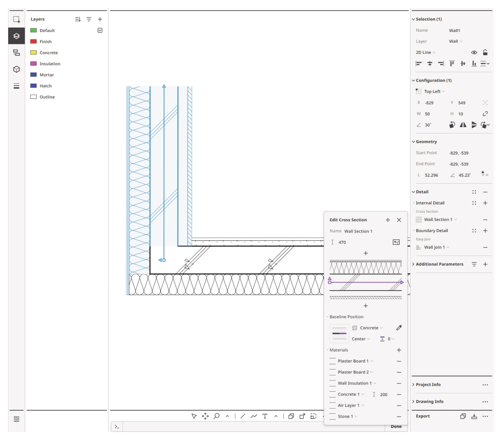
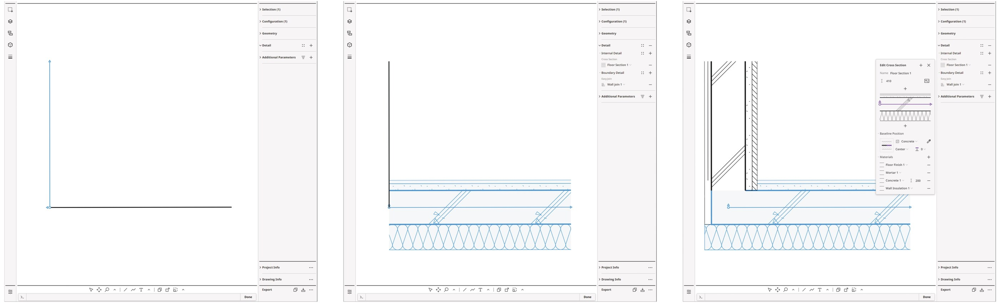
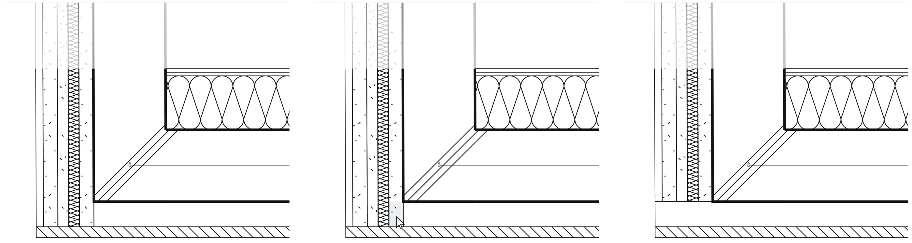

Joint is an experimental web application that generates architectural section details from skeleton lines. Each line carries a cross-section of material layers. Where a new line meets an existing one, a joint detail is generated from the materials of both sections. The user can change which material takes priority at a joint, reorder the layers, and move the baseline.

The work covered the computational geometry algorithms, the MongoDB data structure, and the interactive view used for real-time editing. The stack is Node.js, React.js, Three.js, and MongoDB. A database of section details and an AI model that suggests details from verbal prompts were planned as later steps.

